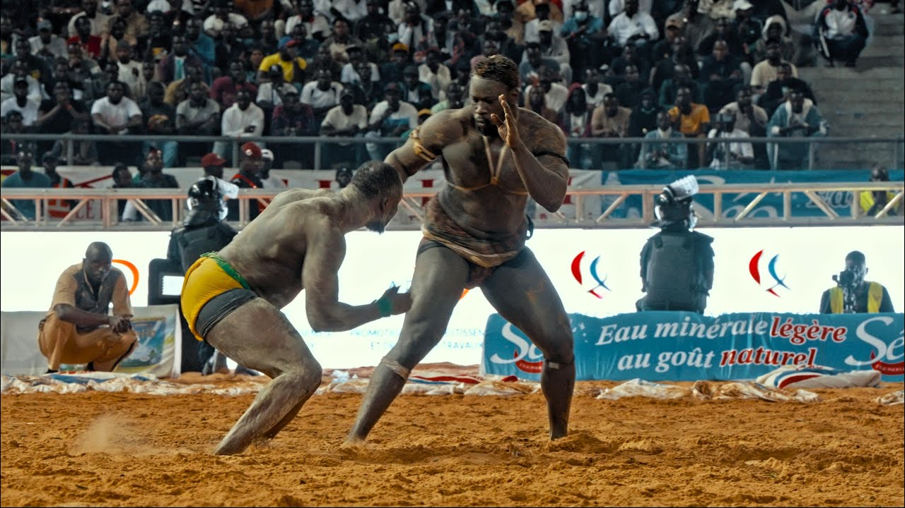

Qu'est-ce que le Lamb ?
Le Lamb, également connu sous le nom de lutte sénégalaise avec frappe, est le sport national du Sénégal. C'est bien plus qu'un simple sport : c'est un spectacle culturel qui mêle tradition, mysticisme et modernité.
Autrefois pratiqué lors des cérémonies de fin de récolte dans les villages, le Lamb est devenu aujourd'hui un phénomène de société qui mobilise des millions de Sénégalais et attire l'attention internationale.
Les lutteurs, appelés "MBEUR", sont de véritables stars adulées par le public. Ils incarnent la force, le courage et l'honneur de la culture sénégalaise.

la Fédération
- La Fédération sénégalaise de lutte (FSL) est l’organisation qui dirige, organise et développe la lutte au Sénégal. Son rôle est de gérer ce sport très populaire appelé Lamb.
1. Organiser la lutte
- La fédération organise et supervise les compétitions de lutte dans tout le pays.
- Elle fixe les règles des combats (lutte avec frappe ou lutte simple).
- Elle valide les calendriers des combats et des tournois.
2. Gérer les lutteurs et les écuries
- Elle enregistre les lutteurs, les écuries et les associations.
- Elle veille au respect des règles et de la discipline dans l’arène.
3. Former et encadrer
- Elle forme les arbitres, les entraîneurs et les officiels.
- Elle aide à développer la lutte dans toutes les régions du Sénégal.
4. Développer et moderniser la lutte
- La fédération travaille pour professionnaliser la lutte et améliorer l’organisation de ce sport important pour la culture sénégalaise.
5. Représenter la lutte auprès de l’État
- Elle représente la lutte auprès du ministère des Sports.
- Elle participe aux décisions importantes pour l’avenir de la lutte.
Un Phénomène Culturel
Spectacle Total
Chaque combat est précédé de danses, de chants et de démonstrations de force. Les lutteurs entrent dans l'arène accompagnés de leurs griots, de musiciens et d'une foule en liesse.
Impact Économique
Le Lamb génère des millions de francs CFA. Les grands lutteurs sont parmi les sportifs les mieux payés d'Afrique, avec des bourses pouvant atteindre plusieurs centaines de millions.
Médiatisation
Les combats sont diffusés en direct à la télévision et sur internet, attirant des millions de téléspectateurs au Sénégal et dans la diaspora.